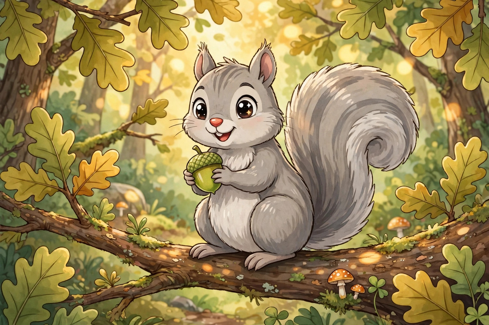

Eastern Gray Squirrel
The Park Acrobat
- Size
- 14 to 21 inches long with tail; 3/4 to 1 1/2 pounds
- Home
- Hardwood forests, city parks, and backyards across eastern North America
- Menu
- Acorns, hickory nuts, mushrooms, fruits, and buds
Superpower: Buries thousands of nuts each fall and forgets some of them. The forgotten nuts grow into new trees, so gray squirrels plant forests by accident.
Fun fact: An adult can munch up to 3 ounces of shelled nuts in a single day.